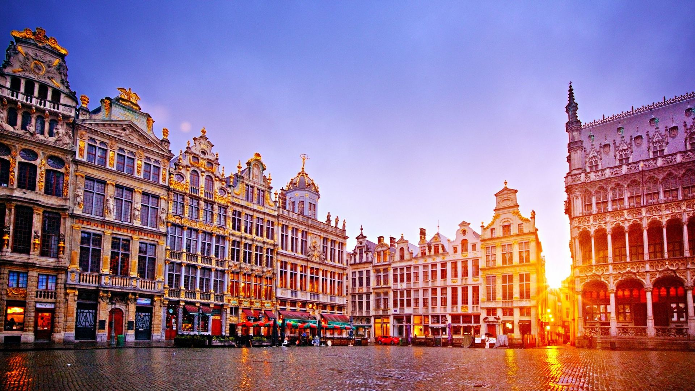

🌍 Mes Voyages



Bienvenue sur ma page personnelle ! Découvrez qui je suis, mon parcours et mes passions.
Je suis étudiant en première année de BUT Science des Données à l'IUT de Niort (Université de Poitiers). Après un bac général avec les spécialités mathématiques et NSI, j’ai débuté un BUT Informatique.
Cependant, la formation, trop centrée sur la programmation et le développement, ne correspondait pas entièrement à mes attentes. Durant cette année, j’ai découvert la science des données et l’intelligence artificielle, domaines qui m’ont beaucoup captivé par leur potentiel à exploiter et analyser les données pour en tirer des résultats concrets.
Cette découverte m’a motivé à me réorienter vers un BUT Science des Données, plus axé sur l’analyse, le traitement et l’exploitation des données, tout en conservant une approche technique.
Au cours de ma formation actuelle, j’ai pu développer des compétences solides en Python, R, SAS, SQL, et VBA, ainsi qu’avec des outils comme Excel, PowerBI et Sphinx, ce qui me permet de travailler efficacement sur des projets.
En dehors de mes études, j’ai longtemps été passionné par le football. J’ai pratiqué en club pendant 10 années dans des clubs de la périphérie d’Angers. Même si j’ai arrêté la pratique active depuis, ce sport m’a beaucoup apporté, tant sur le plan personnel que collectif. Le football m’a enseigné des valeurs essentielles telles que la discipline, l’esprit d’équipe, la persévérance et le sens de l’effort. Ces expériences ont contribué à forger ma rigueur et ma capacité à relever les défis.
Aujourd’hui, même si je ne joue plus en club, le football reste une passion profonde. Je suis un supporter d’Angers SCO, le club de ma ville et je suis avec enthousiasme chaque match et chaque saison. Ce sport continue d’être une source d’inspiration et de joie pour moi, rassemblant les gens et créant des émotions uniques que j’apprécie toujours autant.